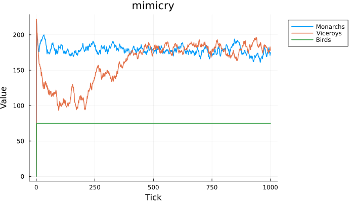
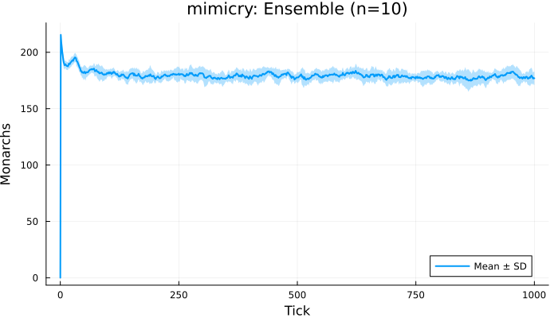
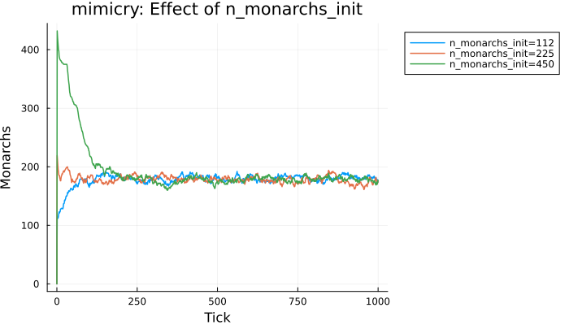

Mimicry
Overview
WHAT IS IT?
Batesian mimicry is an evolutionary relationship in which a harmless species (the mimic) has evolved so that it looks very similar to a completely different species that isn’t harmless (the model). A classic example of Batesian mimicry is the similar appearance of monarch butterflies and viceroy moths. Monarchs and viceroys are unrelated species that are both colored similarly — bright orange with black patterns. Their colorations are so similar, in fact, that the two species are virtually indistinguishable from one another.
The classic explanation for this phenomenon is that monarchs taste yucky. Because monarchs eat milkweed, a plant full of toxins, they become essentially inedible to birds. Researchers have documented birds vomiting within minutes of eating monarch butterflies. The birds then remember the experience and avoid brightly colored orange butterfly/moth species. Viceroys, although perfectly edible, avoid predation if they are colored bright orange because birds can’t tell the difference.
Recent research now suggests that viceroys might also be unpalatable to bird predators, confusing this elegant explanation. However, we have modeled the relationship anyway. Batesian mimicry occurs in enough other situations (snakes, for example) that the explanation’s general truth is unquestionable. The monarch-viceroy story is so accessible — and historically relevant — that we believe it to be instructive even if its accuracy is now questioned.
HOW IT WORKS
This model simulates the evolution of monarchs and viceroys from distinguishable, differently colored species to indistinguishable mimics and models. At the simulation’s beginning there are 450 monarchs and viceroys distributed randomly across the world. The monarchs are all colored red, while the viceroys are all colored blue. They are also distinguishable (to the human observer only) by their shape: the letter “x” represents monarchs while the letter “o” represents viceroys. Seventy-five birds are also randomly distributed across the world.
When the model runs, the birds and butterflies (for the remainder of this description “butterfly” will be used as a general term for monarchs and viceroys, even though viceroys are technically moths) move randomly across the world. When a bird encounters a butterfly it eats the butterfly, unless it has a memory that the butterfly’s color is “yucky.” If a bird eats a monarch, it acquires a memory of the butterfly’s color as yucky.
As butterflies are eaten, they regenerate through asexual reproduction. Each turn, every butterfly must pass two “tests” in order to reproduce. The first test is based on how many butterflies of that species already exist in the world. The carrying capacity of the world for each species is 225. The chances of reproducing are smaller the closer to 225 each population gets. The second test is simply a random test to keep reproduction in check (set to a 4% chance in this model). When a butterfly does reproduce it either creates an offspring identical to itself or it creates a mutant. Mutant offspring are the same species but have a random color between blue and red, but ending in five (e.g. color equals 15, 25, 35, 45, 55, 65, 75, 85, 95, 105). Both monarchs and Viceroys have equal opportunities to reproduce mutants.
Birds can remember up to MEMORY-SIZE yucky colors at a time. The default value is three. If a bird has memories of three yucky colors and it eats a monarch with a new yucky color, the bird “forgets” its oldest memory and replaces it with the new one. Birds also forget yucky colors after a certain amount of time.
THINGS TO NOTICE
Initially, the birds don’t have any memory, so both monarchs and viceroys are eaten equally. However, soon the birds “learn” that red is a yucky color and this protects most of the monarchs. As a result, the monarch population makes a comeback toward carrying capacity while the viceroy population continues to decline. Notice also that as reproduction begins to replace eaten butterflies, some of the replacements are mutants and therefore randomly colored.
As the simulation progresses, birds continue to eat mostly butterflies that aren’t red. Occasionally, of course, a bird “forgets” that red is yucky, but a forgetful bird is immediately reminded when it eats another red monarch. For the unlucky monarch that did the reminding, being red was no advantage, but every other red butterfly is safe from that bird for a while longer. Monarch (non-red) mutants are therefore apt to be eaten. Notice that throughout the simulation the average color of monarchs continues to be very close to its original value of 15. A few mutant monarchs are always being born with random colors, but they never become dominant, as they and their offspring have a slim chance for survival.
Meanwhile, as the simulation continues, viceroys continue to be eaten, but as enough time passes, the chances are good that some viceroys will give birth to red mutants. These butterflies and their offspring are likely to survive longer because they resemble the red monarchs. With a mutation rate of 5%, it is likely that their offspring will be red too. Soon most of the viceroy population is red. With its protected coloration, the viceroy population will return to carrying capacity.
THINGS TO TRY
If the MUTATION-RATE is high, advantageous color genes do not reproduce themselves. Conversely, if MUTATION-RATE is too low, the chances of an advantageous mutant (red) viceroy being born are so slim that it may not happen enough, and the population may go extinct. What is the most ideal setting for the MUTATION-RATE slider so that a stable state emerges most quickly in which there are red monarchs and viceroys co-existing in the world? Why?
If the MEMORY-LENGTH slider is set too low, birds are unable to remember that certain colors are yucky. How low can the MEMORY-LENGTH slider be set so that a stable state of co-existing red monarchs and viceroys emerges?
If you set MUTATION-RATE to 100 and MEMORY to 0, you will soon have two completely randomly colored populations. Once the average color of both species is about 55, return the sliders to MUTATION-RATE equals 16 and MEMORY equals 30 without resetting the model. Does a stable mimicry state emerge? What is the “safe” color?
EXTENDING THE MODEL
One very simple extension to this model is to add a RANDOM-COLOR button. This button would give every butterfly in the world a random color. The advantage of red would be gone, but some color (which could be red, or any other color) would eventually emerge as the advantageous color. This models the evolutionary process from an earlier starting place, presumably when even monarchs had different colors.
It would be interesting to see what would happen if birds were made smarter than they are in this model. A smart bird should probably continue to experiment with yucky colors a few times before being “convinced” that all butterflies of that color are indeed distasteful.
You could try to add variables that kept track of how many yucky individuals of the same color a bird ate. Presumably if a bird has eaten several monarchs that are all the same color, it will be especially attentive to avoiding that color as compared to if it had just eaten one butterfly of that color. Making changes of this nature would presumably make the proportion of models and mimics more in keeping with the predictions of theorists that there are generally more models than mimics. In the current model, birds aren’t smart enough to learn that most butterflies may be harmless in a given situation.
In a real world situation, the birds would also reproduce. Young birds would not have the experiences necessary to know which colors to avoid. Reproduction of birds, depending on how it happened and how often, might change the dynamics of this model considerably.
One could also refine the mutation-making procedures of the model so that a butterfly is more likely to reproduce a mutant that is only slightly differently colored than to reproduce a mutant that is completely differently colored. In the current model, mutants’ colors are simply random.
HOW TO CITE
If you mention this model or the NetLogo software in a publication, we ask that you include the citations below.
For the model itself:
- Wilensky, U. (1997). NetLogo Mimicry model. http://ccl.northwestern.edu/netlogo/models/Mimicry. Center for Connected Learning and Computer-Based Modeling, Northwestern University, Evanston, IL.
Please cite the NetLogo software as:
- Wilensky, U. (1999). NetLogo. http://ccl.northwestern.edu/netlogo/. Center for Connected Learning and Computer-Based Modeling, Northwestern University, Evanston, IL.
COPYRIGHT AND LICENSE
Copyright 1997 Uri Wilensky.

This model is licensed under the Creative Commons Attribution-NonCommercial-ShareAlike 3.0 License. To view a copy of this license, visit https://creativecommons.org/licenses/by-nc-sa/3.0/ or send a letter to Creative Commons, 559 Nathan Abbott Way, Stanford, California 94305, USA.
NetLogo itself is free software for non-commercial use under the terms of the GNU General Public License (see full license information here).
To inquire about commercial licenses for either NetLogo or specific models from the models library, please contact netlogo-commercial-admin@ccl.northwestern.edu.
This model was created as part of the project: CONNECTED MATHEMATICS: MAKING SENSE OF COMPLEX PHENOMENA THROUGH BUILDING OBJECT-BASED PARALLEL MODELS (OBPML). The project gratefully acknowledges the support of the National Science Foundation (Applications of Advanced Technologies Program) – grant numbers RED #9552950 and REC #9632612.
This model was converted to NetLogo as part of the projects: PARTICIPATORY SIMULATIONS: NETWORK-BASED DESIGN FOR SYSTEMS LEARNING IN CLASSROOMS and/or INTEGRATED SIMULATION AND MODELING ENVIRONMENT. The project gratefully acknowledges the support of the National Science Foundation (REPP & ROLE programs) – grant numbers REC #9814682 and REC-0126227. Converted from StarLogoT to NetLogo, 2001.
Parameters
| Parameter | Type | Default | Description |
|---|---|---|---|
n_monarchs_init | Int | 225 | n monarchs init |
n_viceroys_init | Int | 225 | n viceroys init |
n_birds_init | Int | 75 | n birds init |
carrying_capacity_monarchs | Int | 225 | carrying capacity monarchs |
carrying_capacity_viceroys | Int | 225 | carrying capacity viceroys |
memory_duration | Int | 30 | memory duration |
mutation_rate | Float64 | 5.0 | percent |
memory_size | Int | 3 | memory size |
reproduction_chance | Float64 | 4.0 | percent |
grid_width | Int | 41 | -20..20 |
grid_height | Int | 41 | grid height |
max_ticks | Int | 1000 | max ticks |
Source Code
The Julia code to run this model:
using ArkModelZoo
_, trajectory = run_mimicry()Time Series

Ensemble Runs
Ten replicates with different random seeds, showing mean ± standard deviation.

Parameter Sensitivity
Varying n_monarchs_init.

Appendix: Source Code
This model is implemented in the Ark.jl Entity-Component-System (ECS) framework. The code is split into five files, each with a distinct role:
- Parameters: a mutable struct holding all configurable values.
- Components: lightweight data types attached to individual entities (agents).
- Resources: world-level shared state accessible to all systems.
- Systems: functions that operate on entities each tick, defining model behavior.
- Model: wiring that assembles the world, registers resources and systems, and provides the run entry point.
Parameters (parameters.jl)
The parameter struct uses @kwdef so that every field has a default value and can be overridden by keyword. These defaults match the original NetLogo model’s slider settings.
Base.@kwdef mutable struct MimicryParams
n_monarchs_init::Int = 225
n_viceroys_init::Int = 225
n_birds_init::Int = 75
carrying_capacity_monarchs::Int = 225
carrying_capacity_viceroys::Int = 225
memory_duration::Int = 30
mutation_rate::Float64 = 5.0 # percent
memory_size::Int = 3
reproduction_chance::Float64 = 4.0 # percent
grid_width::Int = 41 # -20..20
grid_height::Int = 41
max_ticks::Int = 1000
seed::Int = 42
endComponents (components.jl)
Components are lightweight data types attached to individual entities (agents). Mutable structs hold per-entity state, while empty tag structs act as markers for the ECS query system to efficiently filter entities.
# Butterfly / bird position (continuous, toroidal wrapping)
mutable struct MimicryPosition
x::Float64
y::Float64
end
# Persistent heading (degrees, 0=north, clockwise)
mutable struct MimicryHeading
angle::Float64
end
# NetLogo color value (used for mimicry matching)
mutable struct MimicryColor
color::Float64
end
# Bird memory: list of (color, age) pairs
mutable struct BirdMemory
memory::Vector{Tuple{Float64, Int}}
end
BirdMemory() = BirdMemory(Tuple{Float64, Int}[])
# Breed tags
struct MonarchTag end
struct ViceroyTag end
struct BirdTag endResources (resources.jl)
Resources are world-level singletons shared across all systems, used for global state and aggregate statistics.
mutable struct MimicryStats
n_monarchs::Int
n_viceroys::Int
n_birds::Int
end
MimicryStats() = MimicryStats(0, 0, 0)Systems (systems.jl)
Systems contain the model logic and execute in a defined order each tick. Each system struct implements either initialize! (run once at setup) or update! (run every tick).
# NetLogo base-colors sublist 1 10 = [15,25,35,45,55,65,75,85,95]
const MIMICRY_MUTATION_COLORS = Float64[15, 25, 35, 45, 55, 65, 75, 85, 95]
# --- Initialization ---
struct InitMimicrySystem <: System end
function initialize!(::InitMimicrySystem, world::World)
params = get_resource(world, MimicryParams)
rng = get_resource(world, RNGResource).rng
stats = get_resource(world, MimicryStats)
wf = Float64(params.grid_width)
hf = Float64(params.grid_height)
# Monarchs (red = 15.0 in NetLogo)
for _ in 1:params.n_monarchs_init
x = rand(rng) * wf
y = rand(rng) * hf
heading = Float64(rand(rng, 0:359))
new_entity!(world, (MimicryPosition(x, y), MimicryHeading(heading),
MimicryColor(15.0), MonarchTag()))
end
# Viceroys (blue = 105.0 in NetLogo)
for _ in 1:params.n_viceroys_init
x = rand(rng) * wf
y = rand(rng) * hf
heading = Float64(rand(rng, 0:359))
new_entity!(world, (MimicryPosition(x, y), MimicryHeading(heading),
MimicryColor(105.0), ViceroyTag()))
end
# Birds (black = 0.0)
for _ in 1:params.n_birds_init
x = rand(rng) * wf
y = rand(rng) * hf
heading = Float64(rand(rng, 0:359))
new_entity!(world, (MimicryPosition(x, y), MimicryHeading(heading),
MimicryColor(0.0), BirdTag(), BirdMemory()))
end
# NetLogo doesn't set n-monarchs/n-viceroys/n-birds in setup;
# they default to 0 until the first go sets them via count.
stats.n_monarchs = 0
stats.n_viceroys = 0
stats.n_birds = 0
return nothing
end
# --- Bird movement ---
# NetLogo: set heading 180 + random 180; fd 1
struct MimicryBirdMoveSystem <: System end
function update!(::MimicryBirdMoveSystem, world::World)
rng = get_resource(world, RNGResource).rng
params = get_resource(world, MimicryParams)
wf = Float64(params.grid_width)
hf = Float64(params.grid_height)
for (_, positions, headings) in Query(world, (MimicryPosition, MimicryHeading); with=(BirdTag,))
@inbounds for i in eachindex(positions)
headings[i].angle = Float64(180 + rand(rng, 0:179))
θ = deg2rad(headings[i].angle)
positions[i].x = mod(positions[i].x + sin(θ), wf)
positions[i].y = mod(positions[i].y + cos(θ), hf)
end
end
return nothing
end
# --- Butterfly movement ---
# NetLogo: rt random 100; lt random 100; fd 1
struct MimicryButterflyMoveSystem <: System end
function update!(::MimicryButterflyMoveSystem, world::World)
rng = get_resource(world, RNGResource).rng
params = get_resource(world, MimicryParams)
wf = Float64(params.grid_width)
hf = Float64(params.grid_height)
for (_, positions, headings) in Query(world, (MimicryPosition, MimicryHeading); without=(BirdTag,))
@inbounds for i in eachindex(positions)
headings[i].angle += Float64(rand(rng, 0:99) - rand(rng, 0:99))
θ = deg2rad(headings[i].angle)
positions[i].x = mod(positions[i].x + sin(θ), wf)
positions[i].y = mod(positions[i].y + cos(θ), hf)
end
end
return nothing
end
# --- Eating ---
# Butterflies check for bird on same patch. If bird doesn't remember color, butterfly dies.
# If butterfly is monarch, bird learns the color.
mutable struct MimicryEatingSystem <: System
to_remove::Vector{Entity}
end
MimicryEatingSystem() = MimicryEatingSystem(Entity[])
function _mimicry_color_in_memory(mem::BirdMemory, c::Float64)
for (mc, _) in mem.memory
mc == c && return true
end
return false
end
function update!(system::MimicryEatingSystem, world::World)
params = get_resource(world, MimicryParams)
rng = get_resource(world, RNGResource).rng
wf = Float64(params.grid_width)
hf = Float64(params.grid_height)
empty!(system.to_remove)
# Build spatial index: patch → list of (bird_eid)
bird_cells = Dict{Tuple{Int,Int}, Vector{Entity}}()
for (eids, positions) in Query(world, (MimicryPosition,); with=(BirdTag,))
@inbounds for i in eachindex(positions)
px = mod(floor(Int, positions[i].x), params.grid_width) + 1
py = mod(floor(Int, positions[i].y), params.grid_height) + 1
key = (px, py)
if !haskey(bird_cells, key)
bird_cells[key] = Entity[]
end
push!(bird_cells[key], eids[i])
end
end
# Collect all butterflies and shuffle (ask turtles with [breed != birds])
butterflies = Tuple{Entity, Bool}[] # (eid, is_monarch)
for (eids, _) in Query(world, (MimicryPosition,); with=(MonarchTag,))
@inbounds for i in eachindex(eids)
push!(butterflies, (eids[i], true))
end
end
for (eids, _) in Query(world, (MimicryPosition,); with=(ViceroyTag,))
@inbounds for i in eachindex(eids)
push!(butterflies, (eids[i], false))
end
end
shuffle!(rng, butterflies)
for (bfly_eid, is_monarch) in butterflies
is_alive(world, bfly_eid) || continue
pos = get_components(world, bfly_eid, (MimicryPosition,))[1]
col = get_components(world, bfly_eid, (MimicryColor,))[1]
px = mod(floor(Int, pos.x), params.grid_width) + 1
py = mod(floor(Int, pos.y), params.grid_height) + 1
key = (px, py)
birds_here = get(bird_cells, key, nothing)
birds_here === nothing && continue
isempty(birds_here) && continue
# one-of birds-here
bird_eid = birds_here[rand(rng, 1:length(birds_here))]
is_alive(world, bird_eid) || continue
bird_mem = get_components(world, bird_eid, (BirdMemory,))[1]
if !_mimicry_color_in_memory(bird_mem, col.color)
# Monarch teaches bird the color
if is_monarch
if length(bird_mem.memory) >= params.memory_size
popfirst!(bird_mem.memory)
end
push!(bird_mem.memory, (col.color, 0))
end
# Butterfly dies
push!(system.to_remove, bfly_eid)
end
end
for e in system.to_remove
is_alive(world, e) && remove_entity!(world, e)
end
return nothing
end
# --- Bird forgetting ---
# Age all memories +1, remove those > memory_duration
struct MimicryForgetSystem <: System end
function update!(::MimicryForgetSystem, world::World)
params = get_resource(world, MimicryParams)
for (_, mems) in Query(world, (BirdMemory,))
@inbounds for i in eachindex(mems)
mem = mems[i]
# Age all memories
for j in eachindex(mem.memory)
c, a = mem.memory[j]
mem.memory[j] = (c, a + 1)
end
# Remove expired
filter!(x -> x[2] <= params.memory_duration, mem.memory)
end
end
return nothing
end
# --- Butterfly reproduction ---
# Density-dependent: if random count_breed < cap - count_breed, attempt hatch.
# hatch-butterfly: 4% reproduction chance, 5% mutation.
mutable struct MimicryReproductionSystem <: System
to_spawn::Vector{Tuple{Float64, Float64, Float64, Float64, Bool}} # (x, y, heading, color, is_monarch)
end
MimicryReproductionSystem() = MimicryReproductionSystem(Tuple{Float64, Float64, Float64, Float64, Bool}[])
function update!(system::MimicryReproductionSystem, world::World)
params = get_resource(world, MimicryParams)
rng = get_resource(world, RNGResource).rng
wf = Float64(params.grid_width)
hf = Float64(params.grid_height)
empty!(system.to_spawn)
# Count current populations
n_monarchs = 0
for (eids, _) in Query(world, (MimicryPosition,); with=(MonarchTag,))
n_monarchs += length(eids)
end
n_viceroys = 0
for (eids, _) in Query(world, (MimicryPosition,); with=(ViceroyTag,))
n_viceroys += length(eids)
end
# Collect butterflies and shuffle
butterflies = Tuple{Entity, Bool}[]
for (eids, _) in Query(world, (MimicryPosition,); with=(MonarchTag,))
@inbounds for i in eachindex(eids)
push!(butterflies, (eids[i], true))
end
end
for (eids, _) in Query(world, (MimicryPosition,); with=(ViceroyTag,))
@inbounds for i in eachindex(eids)
push!(butterflies, (eids[i], false))
end
end
shuffle!(rng, butterflies)
for (bfly_eid, is_monarch) in butterflies
is_alive(world, bfly_eid) || continue
if is_monarch
count_breed = n_monarchs
cap = params.carrying_capacity_monarchs
else
count_breed = n_viceroys
cap = params.carrying_capacity_viceroys
end
# Density check: random count_breed < cap - count_breed
count_breed <= 0 && continue
deficit = cap - count_breed
deficit <= 0 && continue
rand(rng, 0:count_breed-1) < deficit || continue
# Reproduction chance (4%)
rand(rng) * 100.0 >= params.reproduction_chance && continue
pos = get_components(world, bfly_eid, (MimicryPosition,))[1]
hdg = get_components(world, bfly_eid, (MimicryHeading,))[1]
col = get_components(world, bfly_eid, (MimicryColor,))[1]
# Hatch: inherit position/heading, fd 1
θ = deg2rad(hdg.angle)
nx = mod(pos.x + sin(θ), wf)
ny = mod(pos.y + cos(θ), hf)
# Mutation: 5% chance to change color
new_color = col.color
if rand(rng) * 100.0 < params.mutation_rate
new_color = MIMICRY_MUTATION_COLORS[rand(rng, 1:length(MIMICRY_MUTATION_COLORS))]
end
push!(system.to_spawn, (nx, ny, hdg.angle, new_color, is_monarch))
# Update running count for density check
if is_monarch
n_monarchs += 1
else
n_viceroys += 1
end
end
for (x, y, heading, color, is_monarch) in system.to_spawn
if is_monarch
new_entity!(world, (MimicryPosition(x, y), MimicryHeading(heading),
MimicryColor(color), MonarchTag()))
else
new_entity!(world, (MimicryPosition(x, y), MimicryHeading(heading),
MimicryColor(color), ViceroyTag()))
end
end
return nothing
end
# --- Stats ---
struct MimicryStatsSystem <: System end
function update!(::MimicryStatsSystem, world::World)
stats = get_resource(world, MimicryStats)
nm = 0
for (eids, _) in Query(world, (MimicryPosition,); with=(MonarchTag,))
nm += length(eids)
end
nv = 0
for (eids, _) in Query(world, (MimicryPosition,); with=(ViceroyTag,))
nv += length(eids)
end
nb = 0
for (eids, _) in Query(world, (MimicryPosition,); with=(BirdTag,))
nb += length(eids)
end
stats.n_monarchs = nm
stats.n_viceroys = nv
stats.n_birds = nb
return nothing
end
# --- Termination ---
struct MimicryTerminationSystem <: System end
function update!(::MimicryTerminationSystem, world::World)
params = get_resource(world, MimicryParams)
tick = get_resource(world, Tick)
if tick.tick + 1 >= params.max_ticks
get_resource(world, Terminate).stop = true
end
return nothing
endModel (model.jl)
The model file assembles all pieces: it creates the ECS World with the required component types, registers resources, builds the Scheduler with systems in execution order, and exposes the public run entry point. The observer pattern records the trajectory each tick.
function mimicry_world(; initial_capacity::Int = 2048)
return World(
MimicryPosition,
MimicryHeading,
MimicryColor,
BirdMemory,
MonarchTag,
ViceroyTag,
BirdTag;
initial_capacity = initial_capacity,
allow_mutable = true,
)
end
function mimicry_systems()
return (
InitMimicrySystem(),
MimicryBirdMoveSystem(),
MimicryButterflyMoveSystem(),
MimicryEatingSystem(),
MimicryForgetSystem(),
MimicryReproductionSystem(),
MimicryStatsSystem(),
MimicryTerminationSystem(),
)
end
function mimicry_model(params::MimicryParams = MimicryParams())
world = mimicry_world()
_add_standard_resources!(world, params)
add_resource!(world, MimicryStats())
scheduler = Scheduler(world, mimicry_systems())
initialize!(scheduler)
return scheduler
end
struct MimicryObserver end
function mimicry_headers(::MimicryObserver)
return ["Monarchs", "Viceroys", "Birds"]
end
function mimicry_values(::MimicryObserver, world::World)
stats = get_resource(world, MimicryStats)
return Float64[stats.n_monarchs, stats.n_viceroys, stats.n_birds]
end
function run_mimicry(; params::MimicryParams = MimicryParams(), observe::Bool = true)
return _run_model(mimicry_model, MimicryObserver(), mimicry_values; params, observe)
end